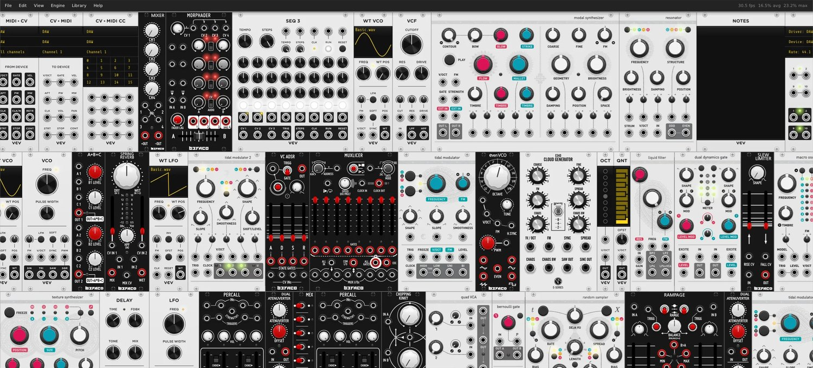
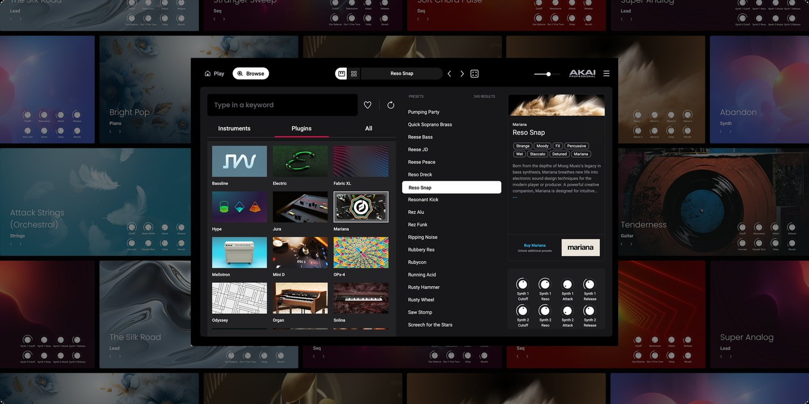
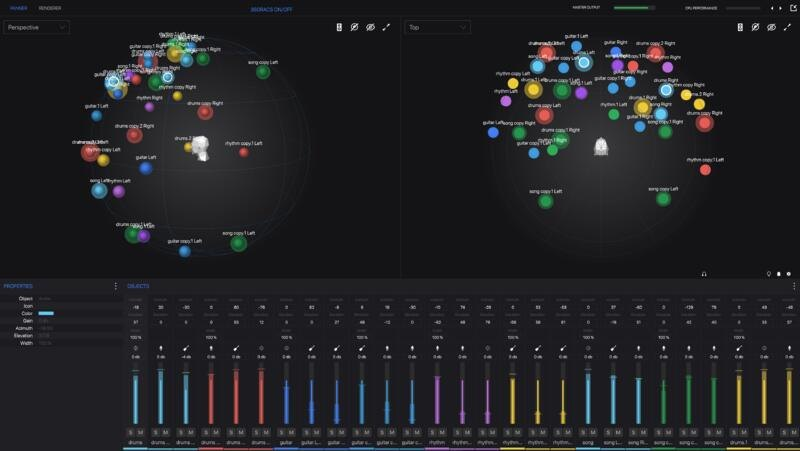
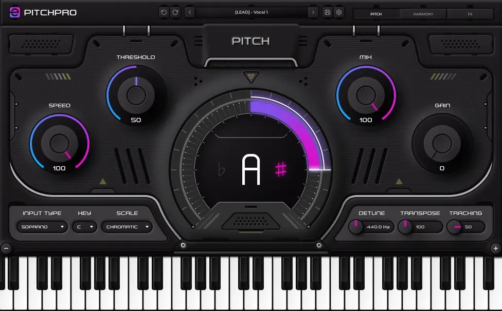
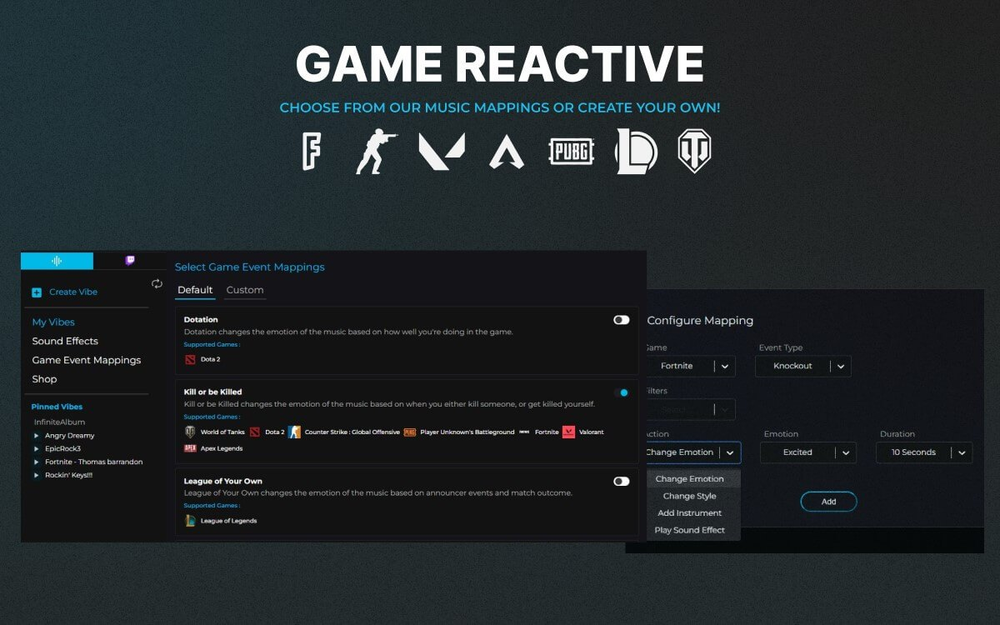

VCV Rack
2025
A virtual modular synthesizer system.
Brought the plugin to Pro Tools by integrating the AAX SDK, and replaced the low-level audio driver libraries to add ASIO support. Contributed to and reviewed the designs for the new API architecture, and prepared the Rack SDK for its version 3 release.

vcvrack.com
Akai Professional Studio Instrument Collection
2022-2025
A cloud-based sampler plugin: a multisample synth engine, InMusic's proprietary effects, and a separate admin application for managing and updating the cloud sample database.
Tech lead of a three-developer team for three years, owning technical direction and delivery across the product and its supporting tooling.

akaipro.com
WalkMix Creator Suite
2020-2026
A plugin suite for arranging, mixing and authoring spatial audio in multiple formats, including Sony 360 Reality Audio. Now included natively in Pro Tools for higher-tier subscribers.
Owned localisation, crash monitoring, and speaker layout and audio output mapping, along with the standalone Player application for spatial audio playback.

walkmix.com
eMastered PitchPro
2025-2026
A real-time pitch correction plugin with an advanced harmony and effect engine.
Sole developer from early prototype through to released product, gathering and aligning stakeholder requirements, advising on design decisions, and implementing and testing the full product.

emastered.com/pitchpro
Infinite Album
2021-2023
An ethically trained, fully licensed AI music system for PC gamers and livestreamers. It reacts to in-game events (switching to a minor scale for 30 seconds after a death in CS:GO, for instance) and can be mapped to viewer interaction through the Twitch API.
Made the audio engine real-time safe, worked on features across several layers in Python, C++, C# and JS, and streamlined build and deployment, including the basic CI pipelines.

infinitealbum.io